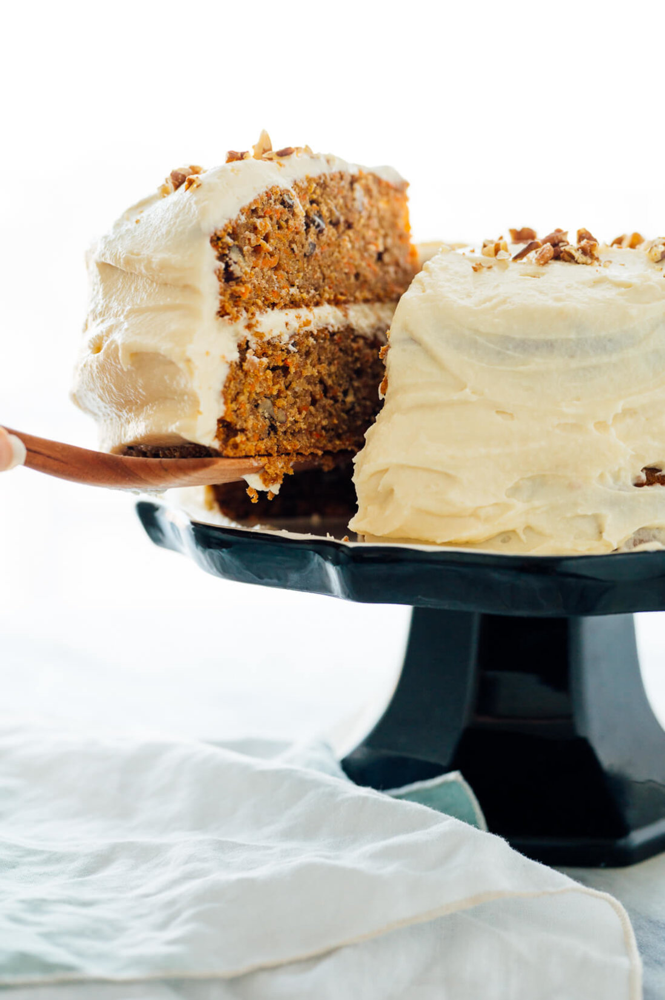

Description
This homemade carrot cake would be perfect for any celebratory occasion. It is exactly what I want my carrot cake to be: delicious and moist, gently spiced with cinnamon and ginger, infused with flecks of fresh carrots, and covered in luscious cream cheese frosting. It is the best.
Ingredients
- 2 cups whole wheat pastry flour or all-purpose flour
- 1 1/2 cups white whole wheat flour or regular whole wheat flour
- 1 tablespoon ground cinnamon
- 2 teaspoons ground ginger
- 2 teaspoons baking powder
- 1 1/2 teaspoons fine sea salt
- 1 teaspoon baking soda
- 1 ½ pounds peeled and grated carrots* (about 4 cups)
- 1 cup raw pecan or walnut halves
- 3/4 cup mild extra-virgin olive oil** or melted coconut oil
- 1 1/4 cups maple syrup or honey
- 1 cup milk of choice
- 4 eggs, preferably at room temperature
- 2 teaspoons vanilla extract
- Double batch classic cream cheese frosting or naturally sweetened cream cheese frosting
Steps
- Preheat the oven to 350 degrees Fahrenheit and grease two 9 inch round cake pans. If you’re making classic cream cheese frosting, don’t forget to pull the cream cheese and butter out of the fridge so they can warm to room temperature.
- Toast the pecans on a rimmed baking sheet in the preheated oven until fragrant, about 5 minutes. Once they’re cool enough to handle, transfer them to a cutting board and chop them into small pieces. Reserve a couple tablespoons chopped pecans for garnishing the cake, if desired. We’ll stir the rest into the dry mixture in the following step.
- In a large mixing bowl, combine both flours, cinnamon, ginger, baking powder, salt and baking soda. Stir until blended. Add the grated carrots and chopped pecans, and stir to combine.
- In a medium mixing bowl, combine the oil, maple syrup, milk, eggs and vanilla extract. Whisk until fully blended.
- Pour the wet ingredients into the dry ingredients. Mix with a big spoon, just until combined (a few lumps are ok). Divide the batter evenly between the two cake pans and spread the batter in an even layer on top.
- Bake the cakes on the middle rack for 45 to 50 minutes, or until the center of the cakes is springy to the touch and a toothpick inserted into the center comes out clean. Place the baked cakes on a cooling rack and let them cool completely before frosting.
- When you’re ready to assemble, prepare the frosting as directed. Carefully invert the cakes to release them from their pans. Frost the top of one cake with about one-third of the frosting. Place the second cake on top, and frost the top with another one-third of the frosting. Finish by frosting around the side of the cake with the remaining frosting. If desired, sprinkle the reserved chopped pecans on top.
- When you’re ready to serve, use a sharp chef’s knife to carefully cut the cake into slices. The cake will keep at room temperature for the rest of the day, and for up to 4 days in the refrigerator
Notes
- CARROT TIPS: Skinny-to-medium carrots (not large) offer the best carrot flavor. The easiest way to grate your carrots is in a food processor with the grating attachment. You can also grate them by hand, on the medium holes of a box grater. Don’t use store-bought matchstick carrots; they’re way too thick and will make your cake crunchy.
- OLIVE OIL NOTE: I recommend California Olive Ranch Everyday for this recipe. It’s an affordable, high quality olive oil that you can find at most grocery stores, and the flavor is so mild that you will not detect it in the finished product.
- FLOUR SUBSTITUTIONS: If desired, you can make this cake with a total of 3 ½ cups all-purpose flour or gluten-free all-purpose flour.
- MAKE IT GLUTEN FREE: Substitute your favorite all-purpose gluten-free flour blend.
- MAKE IT NUT FREE: Simply omit the pecans.
- MAKE IT DAIRY FREE: Use a non-dairy milk. Use a dairy-free cream cheese frosting.
- MAKE IT NATURALLY SWEETENED: The cake itself is naturally sweetened with maple syrup or honey. Top the cake with my date-sweetened cream cheese frosting for a cake free of refined sugar.
- EGG NOTE: I’m sorry to report that this is not a candidate for egg-free baking. I’ve tried this recipe with flax eggs in place of the real eggs, and they did not provide enough lift to counteract the weight of the carrots.
- PAN SIZE NOTES: You could make these cakes in 9 inch square baking pans, no adjustments needed. You can also cut the recipe in half to make one 9 inch round or square cake. For other pan sizes, keep the baking temperature constant and bake until the center of the cake is springy to the touch and a toothpick comes out clean (timing will depend on the pans used).
- MAKE CUPCAKES: Divide the batter between 2 dozen muffin cups and bake at 350 for 18 to 24 minutes, or until the cupcakes are golden on top and a toothpick inserted into a cupcake comes out clean.